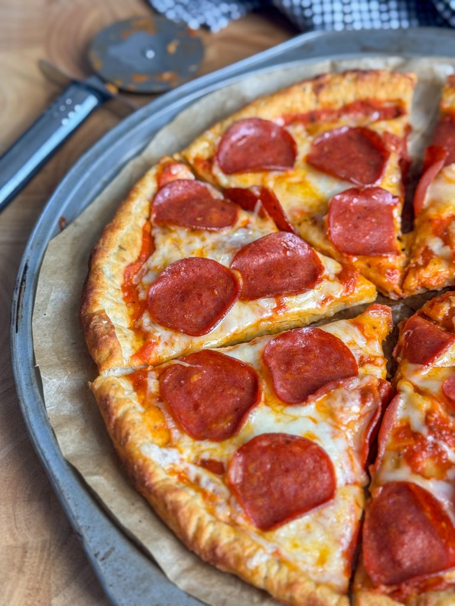

High Protein Pepperoni Pizza
Delicious pepperoni pizza with dough made from scratch.
Ingredients
- 65g Self Raising Flour
- 11g Coconut Flour
- 5g Nutritional Yeast
- Italian Seasoning & Garlic Powder
- 75g Egg Whites
- 140g Low Fat Greek Yoghurt
- 90g Pizza Sauce
- 55g Low Fat Grated Cheese
- 14 Beef Pepperoni Slices
Steps
- In a bowl add 65g of self raising flour, 11g of coconut flour, 5g of nutritional yeast, a dash of italian seasoning, garlic powder & mix to avoid clumping
- Once mixed add 75g of egg whites & 140g of low fat greek yoghurt then mix it together using a spoon until you have a wet & thick paste.
- Spray a sheet of baking paper with light cooking oil then use a spoon to place all of the mixture onto the middle of the baking paper.
- Spread the paste using a wet spoon in a circular motion & form a pizza base to your desired shape.
- Bake the pizza base in the oven at 230C/450F for 10 minutes until the base is crispy & golden brown.
- Take it out the oven & evenly spread 90g of pizza sauce, 55g of low fat grated cheese, 14 slices of beef pepperoni & bake it once more for 5-10 minutes or until the cheese is golden brown.